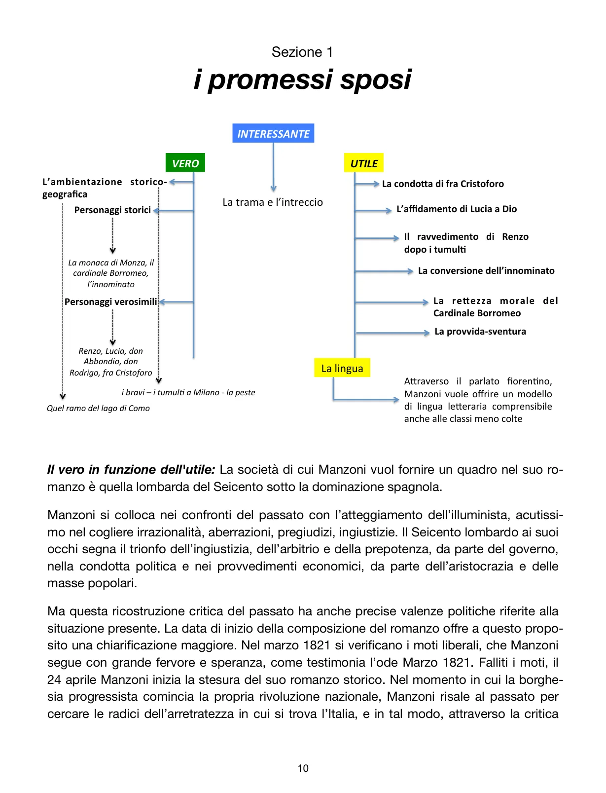
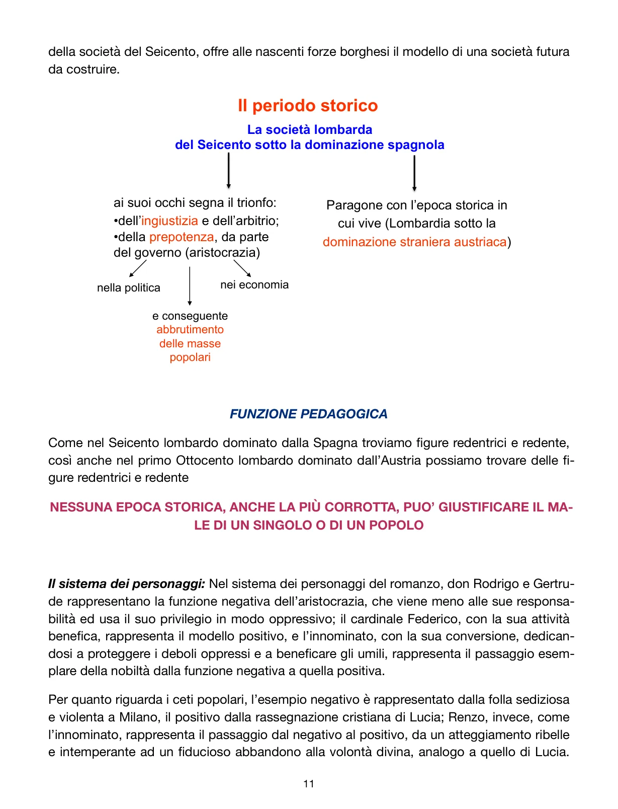
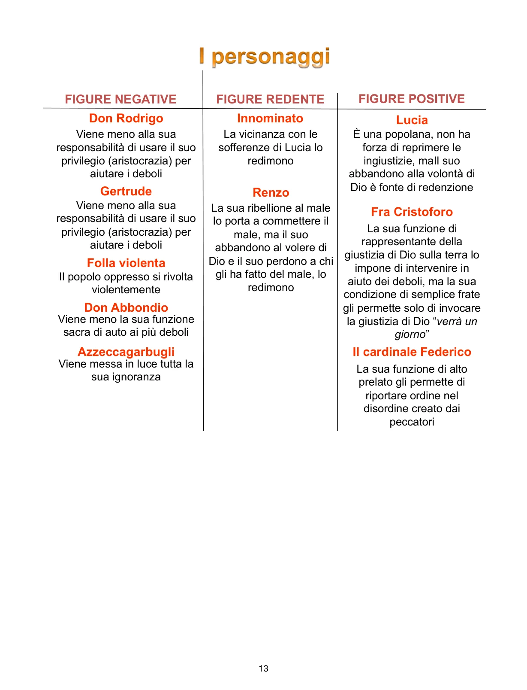

Il romanzo come sintesi più alta della poetica manzoniana: vero storico, funzione educativa e rappresentazione concreta dell’umano.
Il vero in funzione dell’utile
Nel romanzo Manzoni ricostruisce la Lombardia del Seicento sotto la dominazione spagnola. La scelta non è antiquaria. Vuole mostrare una società segnata da ingiustizia, arbitrio e prepotenza da parte del governo, dell’aristocrazia e delle masse accecate. Nel farlo parla anche al suo presente: la Lombardia dell’Ottocento sotto dominio austriaco.
Dopo il fallimento dei moti del 1821, il ritorno al Seicento diventa una diagnosi politica: capire le radici dell’arretratezza italiana per offrire un modello di società futura da costruire.

Il romanzo come sintesi di vero, utile e interessante: ambientazione, personaggi storici e verosimili, lingua, trama.
Funzione pedagogica
La lezione del romanzo è netta: nessuna epoca storica, anche la più corrotta, può giustificare il male del singolo o di un popolo. Anche nel Seicento più degradato possono nascere figure redentrici e redente. La storia pesa, ma non assolve.
Per questo la religione, secondo Manzoni, è la vera forza riformatrice: agisce alla radice dei mali, cioè nell’animo umano.

Seicento lombardo, ingiustizia strutturale e paragone implicito con il presente di Manzoni.
La trama generale
Lucia Mondella e Renzo Tramaglino sono promessi sposi nella Lombardia del 1628. Don Rodrigo impedisce il matrimonio, don Abbondio cede alla minaccia, l’Azzeccagarbugli si tira indietro, fra Cristoforo tenta inutilmente di opporsi. Seguono fuga, separazione, Monza, tumulti di Milano, rapimento di Lucia, crisi e conversione dell’Innominato, peste, morte di don Rodrigo, ritrovamento dei due giovani e matrimonio finale nel bergamasco.
La trama intreccia continuamente vicenda privata e storia collettiva: carestia, dominio straniero, tumulti, guerra, peste. È questo intreccio che rende il romanzo uno strumento perfetto per il vero storico.
Sistema dei personaggi
Don Rodrigo e Gertrude rappresentano la degenerazione dell’aristocrazia. Il cardinale Federico Borromeo è il modello positivo della nobiltà che usa il proprio ruolo per il bene. L’Innominato incarna il passaggio dalla funzione negativa a quella positiva attraverso la conversione.
Fra il popolo, Lucia è il polo della fiducia religiosa; Renzo compie un percorso di maturazione; la folla dei tumulti mostra il rischio della ribellione cieca. Tra i ceti medi, don Abbondio e Azzeccagarbugli sono esempi negativi; fra Cristoforo è il modello positivo.

Mappa dei personaggi: figure negative, positive e redente secondo il PDF.